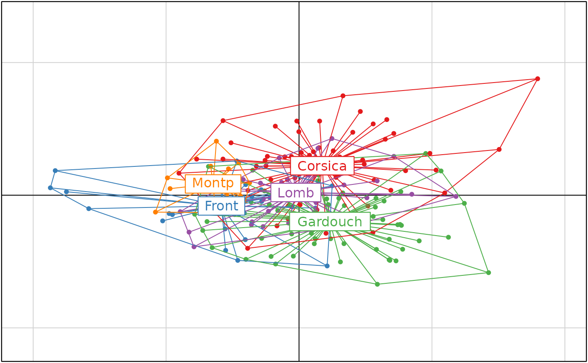

Morphometric data set
houmousr.RdMorphometric data set describing the shape of the first upper molar in populations of the Western European house mouse (Mus musculus domesticus)
Usage
data(houmousr)Format
houmousr is a list with 2 components.
- dfcc
is a data frame with 214 rows (mice) and 128 morphometric variables.
- faccc
is a factor giving the sampling location of the 214 mice.
Details
The rows of houmousr$dfcc correspond to 214 mice sampled in five locations in France and Italy. The 128 columns are 128 aligned coordinates describing the shape of the occlusal surface of the first upper molar (UM1).
houmousr$faccc is a factor giving the location where mice were sampled: Montpellier, Frontignan, Gardouch (South of France), Lombardy (Northern Italy), and Corsica.
Source
Thioulouse, J., Renaud, S., Dufour, AB. et al. Overcoming the Spurious Groups Problem in Between-Group PCA. Evol Biol (2021). https://doi.org/10.1007/s11692-021-09550-0
References
Renaud S, Pantalacci S, Auffray J (2011) Differential evolvability along lines of least resistance of upper and lower molars in island house mice. PLoS ONE 6, https://doi.org/10.1371/journal.pone.0018951
Renaud S, Dufour A, Hardouin E, Ledevin R, Auffray J (2015) Once upon multivariate analyses: when they tell several stories about biological evolution. PLoS ONE 10, https://doi.org/10.1371/journal.pone.0132801
Renaud S, Ledevin R, Souquet L, Gomes Rodrigues H, Ginot S, Agret S, Claude J, Herrel A, Hautier L (2018) Evolving teeth within a stable masticatory apparatus in Orkney mice. Evolutionary Biology 45:405–424
Examples
data(houmousr)
fac1 <- houmousr$faccc
df1 <- houmousr$dfcc
nf1 <- nlevels(fac1) - 1
# Compute PCA
pca1 <- dudi.pca(df1, scale = FALSE, scannf = FALSE, nf = nf1)
# Compute BGA
bca1 <- bca(pca1, fac1, scannf = FALSE, nf = nf1)
if(adegraphicsLoaded()) {
s.class(bca1$ls, fac1, starSize = 0, chullSize = 1, ellipseSize = 0, ppoint.cex = 0,
plabel.cex = 0, plegend.drawKey = FALSE, col = TRUE)
s.class(bca1$ls, fac1, starSize = 1, ellipseSize = 0, col = TRUE, add = T)
} else {
col1 <- c("#E41A1C", "#377EB8", "#4DAF4A", "#984EA3", "#FF7F00")
s.class(bca1$ls, fac1, cstar = 1, cellipse = 0, col = col1)
s.chull(bca1$ls, fac1, optchull = 1, add.plot = TRUE, col = col1)
}

if (FALSE) { # \dontrun{
# Compute cross-validated coordinates
xbca1 <- loocv(bca1)
plot(xbca1)} # }